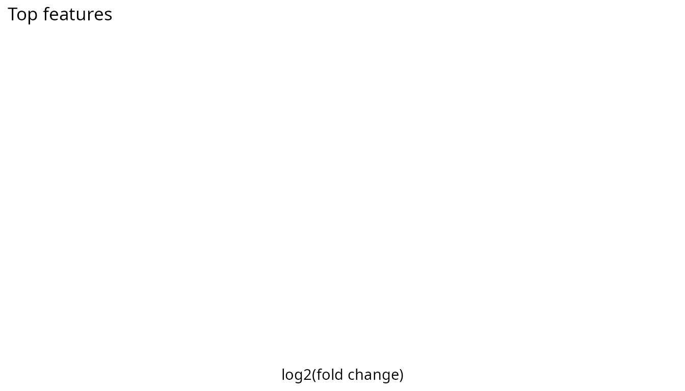
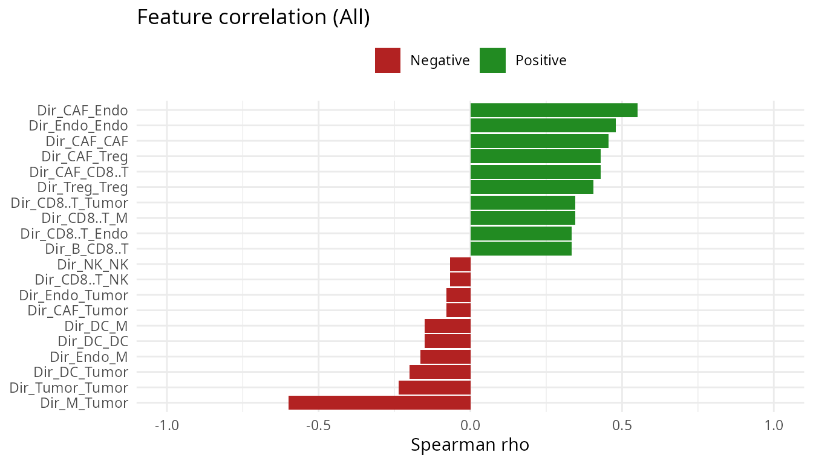

Overview
RaCInG reconstructs patient-specific cell-cell
communication networks from bulk RNA-seq data. The package supports two
complementary workflows:
- a kernel-based approach for fast deterministic feature extraction, and
- a Monte Carlo approach for simulation-based network summaries.
This vignette shows the recommended workflow and the most important entry points for new users, using both the bundled, ready-made example data and a real bulk RNA-seq counts matrix run through the full preprocessing pipeline.
Installation
Install from GitHub
# install.packages("remotes")
remotes::install_github("VeraPancaldiLab/RaCInG_package")
library(RaCInG)Install from a local checkout
If you want to build the RaCInG input matrices directly from raw
counts, install the optional preprocessing dependencies used by
prepare_input_files():
install.packages(c("ggplot2", "nnls"))
# ADImpute and OmnipathR are available from Bioconductor:
BiocManager::install(c("ADImpute", "OmnipathR"))
# liana and multideconv are GitHub-only:
remotes::install_github(c("saezlab/liana", "VeraPancaldiLab/multideconv"))Workflow at a glance
| Goal | Function | Output |
|---|---|---|
| Build input matrices from raw counts | prepare_input_files() |
Named list with L, R, C,
LR matrices and labels |
| Compute deterministic features | compute_racing_kernel() |
Kernel arrays + feature matrix |
| Compute simulation summaries | compute_racing_montecarlo() |
Processed Monte Carlo results |
| Compare clinical groups |
wilcox_group_test() +
top_features_plot()
|
Statistics table and ranked bar plot |
| Relate features to a continuous score |
correlate_features_with_score() +
correlation_plot()
|
Correlation table and rainfall plot |
How prepare_input_files() builds its inputs
Starting from a raw gene-by-sample counts matrix,
prepare_input_files() chains together several packages so
you never have to run them by hand:
-
Normalization: counts are converted to TPM with
ADImpute::NormalizeTPM(). -
Deconvolution: cell-type fractions are estimated
with
multideconv::compute.deconvolution()(defaults to the Quantiseq method, but any method(s) supported by multideconv can be passed viadeconv_method). -
Subgroup analysis:
multideconv::compute.deconvolution.analysis()identifies groups of highly correlated deconvolution features (e.g. several methods agreeing on the same cell type) and collapses them into a single column per resolved cell type, discarding low-quality/high-zero features along the way. Column names are then standardized and stripped of any method/signature prefix, giving short, consistent cell-type labels (e.g."B.cells","CD4.regulatory"). - Cell-type expression profiles: for every gene, a non-negative least squares fit of bulk expression against the cell-type fractions gives one expression value per gene per resolved cell type.
-
Ligand-receptor prior knowledge: a curated,
OmniPath-backed consensus network is retrieved with
liana::get_curated_omni()and restricted to ligand/receptor roles, then decomplexified into single-gene subunits. -
Filtering and assembly: ligand-receptor pairs are
kept only where both genes are expressed above 10 TPM in the relevant
cell types, and the
Lmatrix,Rmatrix,Cmatrix, andLRmatrixinputs (see below) are assembled and written tooutput_folder.
You can skip any of steps 2-5 by supplying your own
deconv, cell_expr_profile, or
cc_network directly.
Recommended workflow with a real bulk RNA-seq dataset
The examples below use the raw bulk RNA-seq counts matrix bundled
with the multideconv package (raw_counts, from
Mariathasan et al. 2018, a urothelial/bladder cancer cohort profiled for
anti-PD-L1 response) to exercise the full pipeline end to end, from raw
counts to features to statistics. These chunks call out to the network
(OmniPath/LIANA) and run real deconvolution, so they are shown but not
evaluated when the vignette is built; run them interactively to try the
full pipeline yourself.
1. Build input matrices from raw counts
data(raw_counts, package = "multideconv")
counts_matrix <- as.matrix(raw_counts)
input <- prepare_input_files(
counts = counts_matrix,
output_folder = "Results/",
file_name = "mariathasan",
deconv_method = "Quantiseq"
)
str(input, max.level = 1)
input$celltypes2. Run the kernel method
The kernel method is the fastest way to derive direct, wedge,
triangle, or GSCC features across patients. You can pass
counts to let the function compute inputs automatically, or
supply previously computed matrices via input_data.
# Option A: from raw counts (runs prepare_input_files internally)
kernel_res <- compute_racing_kernel(
counts = counts_matrix,
output_folder = tempdir(),
file_name = "mariathasan",
communication_type = "W",
norm = TRUE
)
# Option B: from pre-computed input matrices (skips preprocessing)
kernel_res <- compute_racing_kernel(
input_data = input,
communication_type = "W",
norm = TRUE
)
head(kernel_res$features[, 1:5])Feature columns with no possible ligand-receptor pathway in any
patient (structurally zero for every patient) are dropped automatically,
rather than returned as dead all-zero columns – so
ncol(kernel_res$features) is usually well below the full
combinatorial count of cell-type combinations.
communication_type also accepts a vector,
e.g. c("D", "W", "TT", "GSCC"). The kernel itself (the
expensive analytic step) is only ever computed once regardless of how
many types you request, so if you want more than one feature family
there is no need to call compute_racing_kernel() again –
request them all in one call instead:
kernel_res <- compute_racing_kernel(
input_data = input,
communication_type = c("D", "W", "TT", "GSCC"),
norm = TRUE
)
# features is now a named list, one data frame per requested type
names(kernel_res$features)
head(kernel_res$features$D[, 1:5])3. Run the Monte Carlo method
Use the Monte Carlo workflow when you want simulation-based summaries
or uncertainty estimates from repeated graph realizations. The same
input_data shortcut is available here. Simulation cost
scales with Ncells and Ngraphs; the values
below are kept small for a quick illustration.
set.seed(1)
mc_res <- compute_racing_montecarlo(
counts = counts_matrix,
output_folder = tempdir(),
deconv_method = "Quantiseq",
file_name = "mariathasan",
nPatients = 3,
communication_type = "W",
Ncells = 100,
Ngraphs = 10,
Ndegree = 3,
norm = TRUE
)
# Or from pre-computed inputs:
mc_res <- compute_racing_montecarlo(
input_data = input,
output_folder = tempdir(),
file_name = "mariathasan",
communication_type = "W",
Ncells = 100,
Ngraphs = 10,
Ndegree = 3,
norm = TRUE
)
head(mc_res$output$mean[, 1:5])As with the kernel method, communication_type accepts a
vector (any combination of "D", "W",
"TT", "CT", "GSCC"). Every
requested type is extracted from the same simulated graphs,
instead of re-simulating a fresh set of graphs per type – graph
generation, not feature extraction, is the expensive part of a Monte
Carlo run:
mc_res <- compute_racing_montecarlo(
input_data = input,
communication_type = c("D", "W", "TT", "CT", "GSCC"),
Ncells = 100,
Ngraphs = 10,
Ndegree = 3,
norm = TRUE,
output_folder = tempdir(),
file_name = "mariathasan"
)
# output is now a named list, one entry per requested type
names(mc_res$output)
head(mc_res$output$D$mean[, 1:5])Patients are independent of each other, so larger runs can be
parallelized across cores with ncores (via
parallel/doParallel/foreach, so
it works the same way on Windows, macOS, and Linux):
mc_res <- compute_racing_montecarlo(
input_data = input,
communication_type = "D",
Ncells = 500,
Ngraphs = 100,
Ndegree = 20,
ncores = 4,
output_folder = tempdir(),
file_name = "mariathasan"
)4. Compare clinical groups
Once features are available in a patient-by-feature matrix, use the
built-in Wilcoxon workflow to compare groups.
wilcox_group_test() reports, per feature and per pair of
groups, the Wilcoxon statistic, fold change, and (jointly) FDR-adjusted
p-value; top_features_plot() shows the top up/down features
by log2(fold change) as a ranked bar chart.
grouping <- c("Responder", "Responder", "Non-responder", "Non-responder")
wilcox_results <- wilcox_group_test(kernel_res$features, grouping)
head(wilcox_results)
top_features_plot(wilcox_results, top_n = 15)With more than two groups, every pairwise comparison is run
automatically; subset wilcox_results by
Comparison (or pass a two-group subset to
top_features_plot()) to inspect one pair at a time.
5. Correlate features with a continuous score
If you have a continuous per-patient score (e.g. an immune response
or survival score), correlate_features_with_score() reports
the Spearman correlation between every feature and the score, pooled
across all patients and, optionally, within groups.
correlation_plot() shows the top positive and negative
correlations.
response_score <- setNames(rnorm(nrow(kernel_res$features)), rownames(kernel_res$features))
corr_results <- correlate_features_with_score(kernel_res$features, response_score)
head(corr_results)
correlation_plot(corr_results, top_n = 10)Notes
-
compute_racing_kernel()andcompute_racing_montecarlo()are the main entry points. - Both accept an
input_dataargument with pre-computed matrices (as returned byprepare_input_files()), which skips all preprocessing. -
prepare_input_files()requires the optional packages listed under Installation for deconvolution and prior-network assembly. - The original Python implementation is available at https://github.com/SysBioOncology/RaCInG.
Understanding the input files
RaCInG requires four matrices and associated label vectors that describe the cell-cell communication landscape for a cohort of patients. The table below summarises each component:
| Component | Dimensions | Description |
|---|---|---|
| Lmatrix | cell types × ligands | Binary compatibility matrix: 1 if that ligand is
expressed above expr_threshold in that cell type,
0 otherwise. Rows are cell types; columns are ligands. |
| Rmatrix | cell types × receptors | Binary compatibility matrix: 1 if that receptor is
expressed above expr_threshold in that cell type,
0 otherwise. Same row order as Lmatrix. |
| Cmatrix | patients × cell types | Cell-type fraction for each patient. Each row sums to 1. |
| LRmatrix | ligands × receptors × patients | 3-D tensor of ligand–receptor interaction weights. Each patient slice is normalised to sum to 1. |
| celltypes | character vector | Alphabetically sorted cell-type names (shared across L, R, and C). |
| ligands | character vector | Ligand names matching the columns of Lmatrix and the
first axis of LRmatrix. |
| receptors | character vector | Receptor names matching the columns of Rmatrix and the
second axis of LRmatrix. |
| Sign_matrix | ligands × receptors | Optional matrix encoding known stimulatory (+1) or inhibitory (−1) interactions. Zeros indicate unknown. |
These inputs are typically generated by
prepare_input_files() from a raw counts matrix, or they can
be assembled manually from pre-existing deconvolution and prior-network
data. The bundled skcm_example dataset provides a
ready-made example of this structure.
Inspecting the example inputs
library(RaCInG)
data(skcm_example)
# Overall structure
str(skcm_example, max.level = 1)
#> List of 8
#> $ Lmatrix : num [1:9, 1:276] 1 0 1 1 1 1 1 1 0 1 ...
#> ..- attr(*, "dimnames")=List of 2
#> $ Rmatrix : num [1:9, 1:298] 1 0 1 1 0 1 1 1 0 0 ...
#> ..- attr(*, "dimnames")=List of 2
#> $ Cmatrix : num [1:10, 1:9] 0.00374 0.01407 0.02119 0 0.00313 ...
#> ..- attr(*, "dimnames")=List of 2
#> $ LRmatrix : num [1:276, 1:298, 1:10] 0.000228 0 0 0 0 ...
#> $ celltypes : chr [1:9] "B" "CAF" "CD8+ T" "DC" ...
#> $ ligands : chr [1:276] "LGALS9" "ADAM10" "TNFSF12" "ICOSLG" ...
#> $ receptors : chr [1:298] "PTPRC" "MET" "CD44" "LRP1" ...
#> $ Sign_matrix: num [1:276, 1:298] 0 0 0 0 0 0 0 0 0 0 ...
# Lmatrix: 9 cell types × 276 ligands
dim(skcm_example$Lmatrix)
#> [1] 9 276
skcm_example$Lmatrix[1:4, 1:5]
#> LGALS9 ADAM10 TNFSF12 ICOSLG TNF
#> [1,] 1 1 1 1 1
#> [2,] 0 1 1 0 0
#> [3,] 1 1 1 0 1
#> [4,] 1 1 1 1 1
# Rmatrix: 9 cell types × 298 receptors
dim(skcm_example$Rmatrix)
#> [1] 9 298
skcm_example$Rmatrix[1:4, 1:5]
#> PTPRC MET CD44 LRP1 CD47
#> [1,] 1 0 1 0 1
#> [2,] 0 1 1 1 1
#> [3,] 1 0 1 0 1
#> [4,] 1 0 1 1 1
# Cmatrix: 10 patients × 9 cell types (rows sum to 1)
dim(skcm_example$Cmatrix)
#> [1] 10 9
skcm_example$Cmatrix[1:4, ]
#> B CAF CD8 DC Endo M1
#> [1,] 0.003742534 0.017784413 0.0004763235 0.002384983 0.007165426 0.01515965
#> [2,] 0.014074525 0.019407444 0.0807858943 0.062715975 0.004718812 0.07897314
#> [3,] 0.021190628 0.007153891 0.0166497814 0.012495442 0.012443088 0.03645401
#> [4,] 0.000000000 0.038687885 0.0000000000 0.000942249 0.025184327 0.02306847
#> NK Treg Tumor
#> [1,] 6.110609e-10 0.01089191 0.9423948
#> [2,] 6.783486e-04 0.02023155 0.7184143
#> [3,] 6.351805e-04 0.00000000 0.8929780
#> [4,] 4.680075e-09 0.00000000 0.9121171
# LRmatrix: 276 ligands × 298 receptors × 10 patients (3-D tensor)
dim(skcm_example$LRmatrix)
#> [1] 276 298 10
# First patient slice, top-left corner:
skcm_example$LRmatrix[1:4, 1:4, 1]
#> [,1] [,2] [,3] [,4]
#> [1,] 0.0002281731 0.001269455 0.001846635 0.001846635
#> [2,] 0.0000000000 0.001269455 0.003174809 0.000000000
#> [3,] 0.0000000000 0.000000000 0.000000000 0.000000000
#> [4,] 0.0000000000 0.000000000 0.000000000 0.000000000
# Label vectors
skcm_example$celltypes
#> [1] "B" "CAF" "CD8+ T" "DC" "Endo" "M" "NK" "Treg"
#> [9] "Tumor"
head(skcm_example$ligands, 10)
#> [1] "LGALS9" "ADAM10" "TNFSF12" "ICOSLG" "TNF" "HLA.B"
#> [7] "HLA.DRA" "HLA.DQA2" "HLA.DQA1" "HLA.DQB1"
head(skcm_example$receptors, 10)
#> [1] "PTPRC" "MET" "CD44" "LRP1" "CD47" "PTPRK" "COLEC12"
#> [8] "HAVCR2" "MRC2" "TSPAN15"Running with the bundled example data
The skcm_example list shown above can be passed directly
to the kernel or Monte Carlo workflows via the input_data
parameter, and to the statistical analysis functions once features have
been computed.
Kernel method on the example data
kernel_res <- compute_racing_kernel(
input_data = skcm_example,
output_folder = tempdir(),
communication_type = "D",
norm = TRUE
)
#> Using pre-computed input matrices; skipping input generation.
#> Computing kernel for 10 patients
#> Calculating kernel...
#> Calculating features...
head(kernel_res$features[, 1:5])
#> Dir_B_B Dir_B_CAF Dir_B_CD8..T Dir_B_DC Dir_B_Endo
#> Patient_1 0.3655633 0.6472004 0.2193690 0.33179690 0.6839505
#> Patient_2 0.7127917 0.5965352 1.0316271 0.84989477 0.6860757
#> Patient_3 1.1609442 0.7959182 0.8781016 0.92070117 0.8362820
#> Patient_4 0.4675364 0.4900159 0.1068774 0.09173062 0.3913845
#> Patient_5 0.2765913 0.5799559 0.1661719 0.37846202 0.4973818
#> Patient_6 0.4209898 0.5559673 0.7787024 0.51126999 0.6621874Statistical analysis on the example data
set.seed(1)
grouping <- sample(c("GroupA", "GroupB"), nrow(kernel_res$features), replace = TRUE)
wilcox_results <- wilcox_group_test(kernel_res$features, grouping)
head(wilcox_results)
#> Comparison Feature Wilcox_statistic Fold_change Log2FC
#> 1 GroupA_vs_GroupB Dir_B_B 15 1.2465145 0.31789965
#> 2 GroupA_vs_GroupB Dir_B_CAF 17 1.2144863 0.28034627
#> 3 GroupA_vs_GroupB Dir_B_CD8..T 13 1.2607549 0.33428785
#> 4 GroupA_vs_GroupB Dir_B_DC 12 0.9837813 -0.02359046
#> 5 GroupA_vs_GroupB Dir_B_Endo 17 1.2748348 0.35031028
#> 6 GroupA_vs_GroupB Dir_B_M 15 1.0120194 0.01723701
#> P_value Adjusted_P_value
#> 1 0.6095238 1
#> 2 0.3523810 1
#> 3 0.9142857 1
#> 4 1.0000000 1
#> 5 0.3523810 1
#> 6 0.6095238 1
top_features_plot(wilcox_results, top_n = 10)
#> Warning: No shared levels found between `names(values)` of the manual scale and the
#> data's fill values.
response_score <- setNames(rnorm(nrow(kernel_res$features)), rownames(kernel_res$features))
corr_results <- correlate_features_with_score(kernel_res$features, response_score)
head(corr_results)
#> Group Feature Rho P_value Adjusted_P_value
#> 1 All Dir_B_CAF 0.1272727 0.7328868 0.9699973
#> 2 All Dir_B_CD8..T 0.3333333 0.3488462 0.9699973
#> 3 All Dir_B_Endo 0.2363636 0.5138983 0.9699973
#> 4 All Dir_B_M 0.1272727 0.7328868 0.9699973
#> 5 All Dir_B_NK 0.1393939 0.7072038 0.9699973
#> 6 All Dir_B_Treg 0.2484848 0.4915555 0.9699973
correlation_plot(corr_results, top_n = 10)
Monte Carlo method on the example data
set.seed(42)
mc_res <- compute_racing_montecarlo(
input_data = skcm_example,
output_folder = tempdir(),
file_name = "skcm_example",
nPatients = 2,
communication_type = "W",
Ncells = 100,
Ngraphs = 5,
Ndegree = 3,
norm = TRUE
)